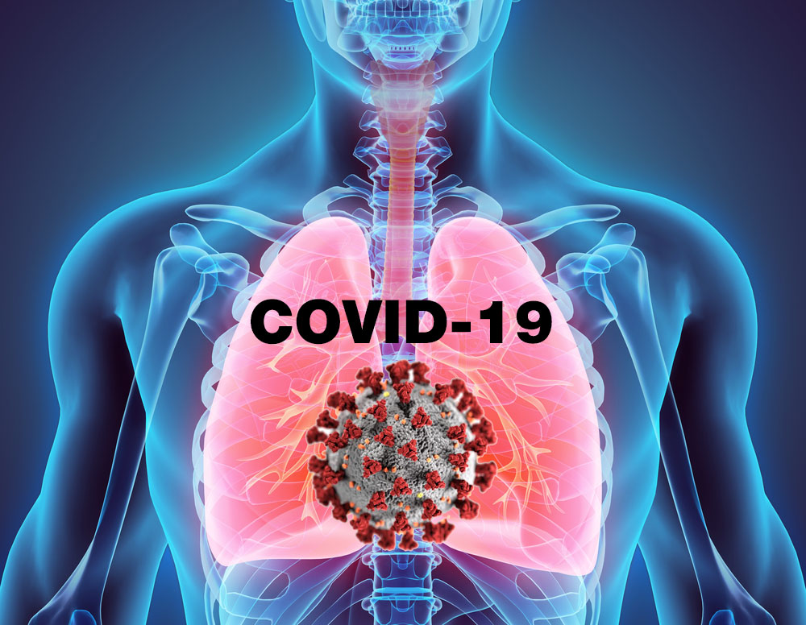
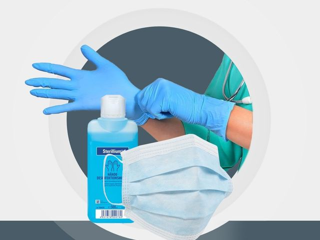
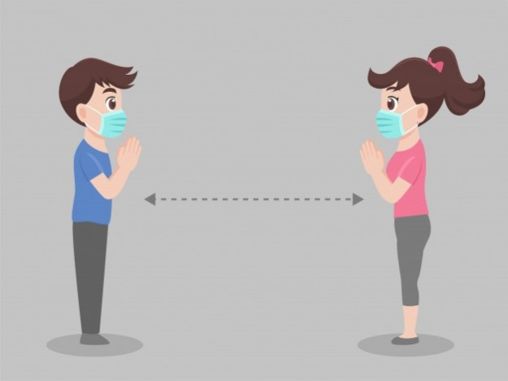
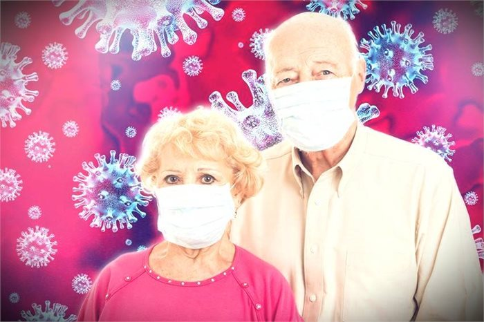
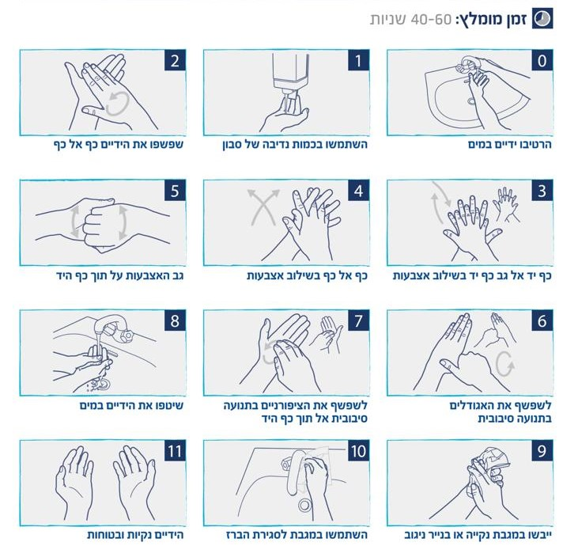
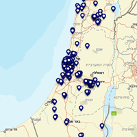
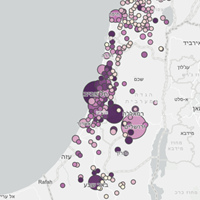

<!DOCTYPE HTML>
<!--
	Information site
	Coronavirus is Israel
-->
<html dir="ltr" lang="he"></html>
	<head>
		<title>COVID - 19 in Israel</title>
		<meta charset="utf-8" />
		<meta name="viewport" content="width=device-width, initial-scale=1, user-scalable=no" />
		<link rel="stylesheet" href="assets/css/main.css" />
		<noscript><link rel="stylesheet" href="assets/css/noscript.css" /></noscript>
	</head>
	<body class="homepage is-preload">
		<div id="page-wrapper">

			<!-- Header -->
				<div id="header">

					<!-- Inner -->
						<div class="inner">
							<header>
								<h1><a href="index.html" id="logo">COVID-19</a></h1>
								<hr />
								<p>קורונה בישראל</p>
							</header>
							<footer>
								<a href="#banner" class="button circled scrolly">התחל</a>
							</footer>
						</div>

					<!-- Nav -->
					<nav id="nav" >
						<ul dir="rtl">
							
							<li><a href="index.html">עמוד הבית</a></li>
							<li><a href="no-sidebar.html">מידע חשוב</a></li>
							<li><a href="right-sidebar.html">נוסעים לחו"ל</a></li>
							<li><a href="left-sidebar.html">מידע נוסף</a></li>
						</ul>
					</nav>

				</div>

			<!-- Banner -->
				<section id="banner">
					<header>
						<h2>.כאן תוכלו למצוא מידע רחב, <strong>COVID-19</strong> יש לכם שאלות בנושא </h2>
						
					</header>
				</section>

			<!-- Carousel -->
			
				<section class="carousel">
					<div class="reel">
					

						<article dir="rtl"> 
							<a href="https://govforms.gov.il/mw/forms/QuarantineForExposees%40health.gov.il" class="image featured"></a>
							<header>
								<h3><a href="https://govforms.gov.il/mw/forms/QuarantineForExposees%40health.gov.il">נחשפתם לחולה קורונה מאומת?</h3>
							</header>
							<p>הייתם במגע עם חולה קורונה מאומת, אלייכם לפעול בצורה הבאה</p>
						</article>

						<article>
							<a href="https://govextra.gov.il/media/15528/maskinfographicapdf.pdf" class="image featured"></a>
							<header>
								<h3><a href="https://govextra.gov.il/media/15528/maskinfographicapdf.pdf">אמצעי הגנה</a></h3>
							</header>
							<p>חובת הצתיידות במסכות, כפפות, וחומרי חיטוי</p>
						</article>

						<article>
							<a href="https://www.clalit.co.il/he/your_health/family/Pages/covid19_prevention.aspx" class="image featured"></a>
							<header>
								<h3><a href="https://www.clalit.co.il/he/your_health/family/Pages/covid19_prevention.aspx">דרכי הגנה</a></h3>
							</header>
							<p>חובת שמירת מרחק במקום ציבוריים - לפחות 2 מטר</p>
						</article>

						<article>
							<a href="https://www.gov.il/he/Departments/Guides/ramzor-cites-guidelines?chapterIndex=7" class="image featured"></a>
							<header>
								<h3><a href="https://www.gov.il/he/Departments/Guides/ramzor-cites-guidelines?chapterIndex=7">כללי התנהגות במקומות ציבוריים</a></h3>
							</header>
							<p>בכניסה למקומות ציבורי חובת בדיקת חום, חובת שמירת מרחק מספק למניעת הדבקה בנגיף</p>
						</article>

						<article>
							<a href="https://www.betipulnet.co.il/articles/%D7%A1%D7%99%D7%95%D7%A2_%D7%9C%D7%A7%D7%A9%D7%99%D7%A9%D7%99%D7%9D_%D7%91%D7%93%D7%99%D7%93%D7%95%D7%AA_%D7%A7%D7%95%D7%A8%D7%95%D7%A0%D7%94/" class="image featured"></a>
							<header>
								<h3><a href="https://www.betipulnet.co.il/articles/%D7%A1%D7%99%D7%95%D7%A2_%D7%9C%D7%A7%D7%A9%D7%99%D7%A9%D7%99%D7%9D_%D7%91%D7%93%D7%99%D7%93%D7%95%D7%AA_%D7%A7%D7%95%D7%A8%D7%95%D7%A0%D7%94/"> מבוגרים ואוכלוסייה בסיכון</a></h3>
							</header>
							<p>
								 מומלץ להיזהר מהתקהלויות מרובות משתתפים, להקפיד על רחצת ידיים ולהימנע ממגע בפנים,
								  בריריות ובעיניים.</p>
						</article>

						<article>
							<a href="https://govextra.gov.il/economy/tavsagol/tavsagol/reception/1/" class="image featured"></a>
							<header>
								<h3><a href="https://govextra.gov.il/economy/tavsagol/tavsagol/reception/1/">התנהגות במקומות עבודה</a></h3>
							</header>
							<p>צריך להקפיד על הנחיות תו הסגול להעסקת עובדים</p>
						</article>

						

						<article>
							<a href="https://www.youtube.com/watch?v=ZUqUqXt-RoM" class="image featured"></a>
							<header>
								<h3><a href="https://www.youtube.com/watch?v=ZUqUqXt-RoM">? איך נכון לשטוף ידיים</a></h3>
							</header>
							<p>חשוב לשמור על הגיינת ידיים נכונה</p>
						</article>

						

					</div>
				</section>
				
			<!-- Main -->
				<div class="wrapper style2" dir="rtl">

					<article id="main" class="container special">
						<a href="#" class="image featured"></a>
						<header>
							<h2><a href="#">שאלות ותשובות בנושא נגיף קורונה החדש</a></h2>
							<p>
								אירוע נגיף קורונה החדש דינאמי ומתפתח. משרד הבריאות עוקב אחר המצב ומעדכן את התייחסותו והמלצותיו בהתאם להתפתחויות. שאלות ותשובות אלו מתעדכנות תדיר בהתאם להתפתחויות בשטח

							</p>
						</header>
						<p>
							<ul>
								<li>
									<strong>מהו נגיף (וירוס) קורונה? </strong>

								</li>
							</ul>
							<p>
								נגיפי קורונה הינם משפחה גדולה של נגיפים (וירוסים) הידועים כגורמים למחלות בבעלי חיים ועלולים לגרום לתחלואה גם בבני אדם.
הם קיבלו את שמם עקב הדמיון שלהם במיקרוסקופ אלקטרוני לכתר (קורונה בלטינית).	
חומרת הפגיעה של הנגיף בבני אדם משתנה בין הנגיפים השונים במשפחה ונעה ממחלה קלה כגון הצטננות,
								 למחלות עם הסתמנות קלינית קשה, הפוגעות בריאות וגורמות לאי ספיקה רב מערכתית כגון,
 התסמונת הנשימתית המזרח התיכונית (MERS) והתסמונת הנשימתית החמורה (SARS).
						</p>
						<p>
							<ul>
								<li>
									<strong> מהו נגיף קורונה novel corona virus 2019?
									</strong>

								</li>
							</ul>
							<p>
								<p>
									נגיף קורונה החדש לא זוהה בעבר כגורם למחלה בבני אדם.
במהלך דצמבר 2019 הוא החל הנגיף לגרום לצבר תחלואה בדלקת ריאות בעיר ווהאן אשר במחוז חוביי במרכז סין, ולאחר מכן תוארה התפשטות של התחלואה לכל המחוזות בסין וכן למקומות אחרים בעולם.
מבין כל נגיפי קורונה אשר גורמים למחלה בבני אדם, נגיף ה-SARS אשר גרם למחלה קשה בשנים 2003/4, הוא הדומה ביותר לנגיף קורונה החדש מבחינת הרכבו הגנטי.
ב-11.2.2020 ארגון הבריאות העולמי העניק שם רשמי לנגיף: SARS-CoV-2, ולמחלה שהוא גורם: COVID-19.
ב-11.3.2020 הכריז ארגון הבריאות העולמי על התפרצות הקורונה כפנדמיה (מגפה).
									</p>

						<footer>
							<a href="https://govextra.gov.il/ministry-of-health/corona/corona-virus/faq-corona/" class="button">למידע נוסף</a>
						</footer>
					</article>

				</div>

			<!-- Features -->
				<div class="wrapper style1" dir="rtl">

					<section id="features" class="container special">
						<header>
							<h2>הנחיות עדכניות לימי הסגר והחגים
							</h2>
							<p>הנחיות כלליות לתקופת הקורונה</p>
						</header>
						<div class="row">
							<article class="col-4 col-12-mobile special">
								<a href="#" class="image featured"></a>
								<header>
									<h3><a href="#">הנחיות לשגרה בזמן קורונה</a></h3>
								</header>
								<p>
									בתוקף עד יום שישי 9.10.2020: המתווה המהודק (סגר) לחגים.
									 לאחר מכן תכנס לתוקף תוכנית הרמזור המסווגת את הרשויות המקומיות בארץ לארבע רמות: 
									 ירוק, צהוב, כתום ואדום, בהתאם למדד התחלואה בהן. 
									 כל צבע קובע את מגבלות ההתקהלות והתפוסה המותרת.
								</p>
							</article>
							<article class="col-4 col-12-mobile special">
								<a href="#" class="image featured"></a>
								<header>
									<h3><a href="https://www.gov.il/he/Departments/Guides/ramzor-cites-guidelines?chapterIndex=2">כללי התנהגות במרחב הציבורי </a></h3>
								</header>
								<p>
									<ul>
										<li>
											<strong>עטיית מסיכה</strong>
		
										</li>
										<li>
											<strong>שמירת מרחק</strong>
		
										</li>
										<li>
											<strong>שמירה על הגיינה</strong>
		
										</li>
										<li>
											<strong> בעת מחלה</strong>
		
										</li>
										<li>
											<strong>בפארקים וגנים ציבוריים</strong>
		
										</li>
										<li>
											<strong>שימוש במעליות</strong>
		
										</li>
										<li>
											<strong>מקומות עבודה</strong>
		
										</li>
									</ul>	
								</p>
							</article>
							<article class="col-4 col-12-mobile special">
								<a href="#" class="image featured"></a>
								<header>
									<h3><a href="https://www.gov.il/he/Departments/Guides/ramzor-cites-guidelines?chapterIndex=1">מתווה מהודק (סגר)</a></h3>
								</header>
								<p>
									הנחיות משרד הבריאות:
									<ul>
										<li>
											<strong>מערכת החינוך </strong>
		
										</li>
										<li>
											<strong>הגבלת התקהלויות</strong>
		
										</li>
										<li>
											<strong>הגבלת תנועה</strong>
		
										</li>
										<li>
											<strong>הגבלת שהייה</strong>
		
										</li>
										<li>
											<strong>הגבלות על פעילות מסחר, בילוי ופנאי</strong>
		
										</li>
										<li>
											<strong>תחבורה</strong>
		
										</li>
										<li>
											<strong>מקומות עבודה</strong>
		
										</li>
									</ul>
								</p>
							</article>
						</div>
					</section>

				</div>

			<!-- Footer -->
				<div id="footer">
					<div class="container">
						
							<header>
							<h2 class="h2 arimo text-center mb-md-5">מפות נתוני קורונה</h2>
							</header>

							<!-- <section class="rowcol-12-mobile">
								<div class="row gtr-50">
									<div class="row-2">
								<header> -->
									<!-- <div class="col-4 col-12-mobile imp-mobile" id="content">
										<article id="main"> -->
											<header>
									<!-- <a href="#" class="image-circle"></a> -->
									<p>
									<a href="https://imoh.maps.arcgis.com/apps/webappviewer/index.html?id=20ded58639ff4d47a2e2e36af464c36e&locale=he&/"></a>
									<article>מפת מקומות חשיפה לחולי קורונה</article>
									</p>
									<p>	
									<a href="https://imoh.maps.arcgis.com/apps/webappviewer/index.html?id=20ded58639ff4d47a2e2e36af464c36e&locale=he&/"></a>
									<article >מפת בידודי בית לפי רשות מקומית</article>
								</p>
								</header>
						
						</div>
						<hr />
						<div class="row">
							<div class="col-12">

								<!-- Contact -->
									<section class="contact">
										<header>
											<h3>דרכי התקשרות נוספים</h3>
										</header>
										<ul class="icons">
											<li><a href="https://twitter.com/IsraelMOH" class="icon brands fa-twitter"><span class="label">Twitter</span></a></li>
											<li><a href="https://www.facebook.com/Health.gov.il/" class="icon brands fa-facebook-f"><span class="label">Facebook</span></a></li>
											<li><a href="https://www.instagram.com/health.gov.il/" class="icon brands fa-instagram"><span class="label">Instagram</span></a></li>
											<li><a href="https://t.me/MOHreport" class="icon brands fa-telegram"><span class="label">Telegram</span></a></li>
											</ul>
									</section>

								<!-- Copyright
									<div class="copyright">
										<ul class="menu">
											<li>&copy; Untitled. All rights reserved.</li><li>Design: <a href="http://html5up.net">HTML5 UP</a></li>
										</ul>
									</div> -->

							</div>

						</div>
					</div>
				</div>

		</div>

		<!-- Scripts -->
			<script src="assets/js/jquery.min.js"></script>
			<script src="assets/js/jquery.dropotron.min.js"></script>
			<script src="assets/js/jquery.scrolly.min.js"></script>
			<script src="assets/js/jquery.scrollex.min.js"></script>
			<script src="assets/js/browser.min.js"></script>
			<script src="assets/js/breakpoints.min.js"></script>
			<script src="assets/js/util.js"></script>
			<script src="assets/js/main.js"></script>

	</body>
</html>